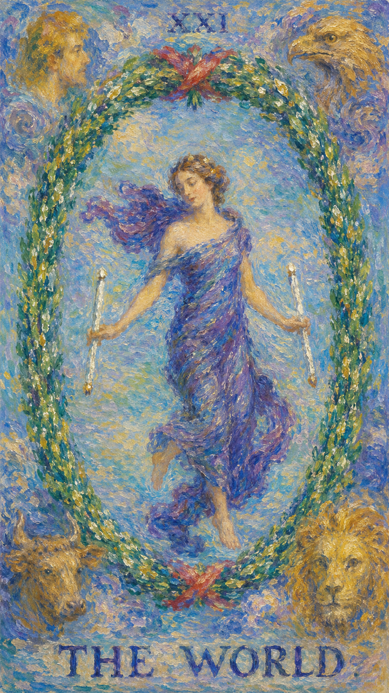

— 貳 · CORRESPONDENCES
对应要素Esoteric Correspondences
- 元素 Element
- 土完成、整合、圆满、阶段达成
- 星座 / 行星
- 土星完成、整合、圆满、阶段达成
- 生命之树 Tree of Life
- Tav路径与此牌的精神功课相连
- 希伯来字母
- Tav（十字记号）通过完成理解当前阶段的命运功课，在圆满中孕育新的开始


世界是旅程的花环，也是经验被整合后的舞蹈。四方元素归位，灵魂终于抵达一个完整的圆。它与命运之轮相呼应——四角依然是狮子、飞鹰、天使与神牛，只是中间不再是转动的轮，而是一位在月桂花环中翩然起舞的少女。她一手握着魔杖，又似一把钥匙，为步入终点的人喝彩，也像是一种召唤，引导胜利者走到智慧之门前，接过那把开启幸福的钥匙。
← 返回大厅 / 选择其它卡牌世界是旅程的花环，也是经验被整合后的舞蹈。四方元素归位，灵魂终于抵达一个完整的圆。它与命运之轮相呼应——四角依然是狮子、飞鹰、天使与神牛，只是中间不再是转动的轮，而是一位在月桂花环中翩然起舞的少女。她一手握着魔杖，又似一把钥匙，为步入终点的人喝彩，也像是一种召唤，引导胜利者走到智慧之门前，接过那把开启幸福的钥匙。
当这张牌出现，说明你正遇到“完成、整合、圆满、阶段达成”的课题。它既可能表现为外部事件，也可能是内心正在成熟的一个阶段。世界是人生旅途的终点，也是一个新的开始——一旦踏入智慧之门，你又会变回愚者，为寻找新的智慧或人生目标而重新启程。快乐的核心元素是“整体”，是一切协调共处的感觉，它不是静态的安稳，而是动态的平衡。世界牌所代表的，往往是一个增广见闻的时期：虽然短时间内或许什么都不会改变，但你有充足的精力去探索喜爱的事物——旅行、广交朋友、博览群书，都是好的选择。作为二十二张大牌的最后一张，世界是一张圆满的牌；只是事物一旦圆满便难有变化，浑圆的石头滚得再久也还是浑圆。多数人对这份安稳是满意的——经历了那么多风霜，总觉得该安定下来了，而“心满意足”本身，对人生而言不就已是一种成功？但偶尔，你也会在极糟的处境里抽到世界牌，那时它因稳定的特性反而成了煎熬：无论身处何种困境，这种状态都会原封不动地持续相当长一段时间，像在给养刚好够用的情况下独自驾车穿越撒哈拉，一马平川却毫无变化，唯有继续重复同样的动作，才可能最终驶出这片沙漠。
舞者位于桂冠之中，四角有四圣兽，象征四元素整合。她身披紫色丝带，姿态轻盈，双足交叉，仿佛在动态的平衡中起舞。绿色的月桂花环环绕四周，是自然、生长与繁荣的循环；四个角落的狮子、神牛、飞鹰与天使，分别对应火、土、风、水四象与四位牌主，守护并指引着这趟旅程。整幅画面被一条衔尾蛇般的环所收束——结束即是新的开始，圆满之后，旅人又将以愚者之姿重新上路。
通过完成理解当前阶段的命运功课，在圆满中孕育新的开始
世界描述的是人事物已经处在完结的阶段——这个阶段是对已经发生之事进行总结，而这种总结是主观的感受。它的特点是：不可对已经发生的人事物进行更改。这正是世界与审判的微妙差别：审判的总结客观如实，世界的圆满则更关乎当事人内心的满足与认定。也因此，处境顺遂的人会因这份安稳而心满意足，处境艰难的人却可能被这份不变所困——同样一张圆满之牌，落在不同的境遇里，滋味截然不同。

舞者位于桂冠之中，四角有四圣兽，象征四元素整合。
衔尾蛇（Ouroboros）象征自我循环与永恒的循环，表示结束与新开始、自我完善。
四个角落构成一个抽象的方形，代表稳定与物理世界的界限。
通常代表力量与勇气，以及火象星座狮子座的象征。
耐力与努力的象征，也可能与土象星座如金牛座相关。
思考高远的象征，与风象星座如水瓶座相关。
精神世界的导向与保护，也代表水象星座如双鱼座。
紫色通常与智慧、精神力量以及皇室相关联。
控制与权力的传统象征，亦似一把开启智慧之门的钥匙。
象征知识、平静与治愈。
可能象征保护与安全感。
自然的象征，代表生长、繁荣与再生的循环。
可能象征地球四方与人类体验的平衡。
可能代表平衡与紧密的联系。
对应此阶段在人生旅程中的功课。
数字 21 是 2 与 1 的组合，约化为 2+1=3（皇后），象征丰盛的圆熟与孕育；同时 21 又是大牌旅程的终点，下一步便回到 0（愚者），周而复始。它指向经验累积后的转折与整合，引导人从事件表层进入更深的精神功课。
在解读时，世界提醒我们：事件表面的顺逆终会变化，真正值得把握的是牌面所揭示的内在功课。圆满并非终结，而是一段完整经验的收束，也是下一趟旅程的起点。

正位的世界表示这股能量正走向圆满与整合。它的提示语是：完成、成功、达成目标、实现梦想、满足、全面性、完美、圆满、世界观。顺着牌面主题行动，享受这份成就，事情会显露出可被把握的方向。
完成，圆满，毕业，旅行，成果，整合，成功，愿望达成，精神高昂，幸福时光，达到巅峰，到达目的地，结合，一体化，融合，成就，才艺，专长，长途行走，游历，传播，世界观
土 · 完成、整合、圆满、阶段达成
感情中，世界代表关系进入与“完成、整合、圆满、阶段达成”有关的阶段：得到祝福的婚姻、最佳伴侣、婚姻美满、永恒的爱恋，是一段稳定、深深相互理解、走向喜剧结尾的关系。单身者会被成熟、完整、能与自己共享圆满的人吸引；有伴侣者则可以围绕承诺、相互理解与共享的幸福，进行更成熟的沟通。
事业学业上，世界象征事业的壮盛时期与既定目标的达成：学业有成、成绩优异、考试顺利，项目成功，甚至迎来国际化的新机会。这份成就大多已水到渠成，按既定的计划稳步前行即可。
人际关系中，世界象征和谐、稳定而深厚的情谊：收入增加、资金运作公道、交友获益、备受他人信赖，身边多是经历沉淀、非常可靠的革命友谊。财富方面运势很好，之前的投资已开花结果，该有的全都有了，保持现况即可。
健康生活上，世界提示身心状态与当前的心理课题相连，常意味着一种圆满、平衡而安稳的状态——身心各方面都处于协调运作之中。它适合趁这份安定去亲近自然、开阔身心，比如前往海洋、草原一类开阔之地旅游，让疲惫的身心好好充电。需要留意的是，圆满之中也可能藏着停滞，不妨为规律的生活添一点新鲜的探索，让身心在动态的平衡里保持活力。
梦想成真，适合前往海洋、草原等开阔地旅游，幸福伴随左右。若问具体事件，正位多表示事情进入圆满收束的关键阶段。主动去理解它的意义、享受成果并为新的旅程做准备，会比单纯等待结果更有力量。

逆位的世界表示这股圆满的能量受阻、失衡或被错误使用，那个本该闭合的圆出现了缺口。它的提示语是：未完成、失败、未达成目标、梦想破灭、不满、不完美、挫折、停滞、困惑、不满意。此时最重要的是先看清自己是否正在抗拒这张牌所要求的功课——也许只差最后一步，却因迟疑、抄近路或半途而废，迟迟无法真正收尾。
未完成，延迟，缺口，停滞，收尾困难，成就感不足，无法全身心投入，杞人忧天，事事不顺，不安现状，情绪低迷，思维幼稚，迟到，耽误，推迟，走捷径，跳过，失败，阻碍，滞后，困惑，恐惧未知
土 · 受阻、延迟、反复与失衡
感情中，逆位的世界常表现为盲目接受、半途而废，恋情前景不明朗、彼此难以真正结合，或往日的热情逐渐冷却、对伴侣失去新鲜感，关系暧昧不清而不稳定。它提示感情容易出现误解、冷淡或对承诺的恐惧。关系若一直无法推进，需要回到双方真实的需求。
事业学业上，逆位的世界常表现为面对工作力不从心或精神懈怠、事业远景不被看好、处于低潮期，项目中途而废，潜能受外界束缚无法发挥，或对薪资待遇感到不满、学业中途而废、备考不足而失利。它提示你可能困在原地、难以突破。先重新评估目标，找到完成它的新方法，再决定下一步。
人际方面要小心投射与不公平的交换。逆位的世界常表现为交友遇挫、朋友关系冷淡、处世过于幼稚以致事事不顺，难以分享成就。财富方面则可能破产、现金流短缺，市场上有些损失而自己难以避免。适合回到理性评估与长期规划，维持现况、避免被恐惧推着走。
健康上，逆位的世界常提示一种停滞与悬而未决的状态：身心仿佛被困在某个未完成的循环里，提不起劲，成就感与满足感双双缺失。长期的不满与杞人忧天，可能在情绪上累积成隐隐的内耗。建议减少对“未完成”的焦虑，把大的目标拆成可以一步步收尾的小步骤，重新建立可持续的生活节奏，让身心从原地踏步中慢慢走出来。
计划不周，不宜乔迁动土，缺乏先见之明，不得要领。事情可能延迟、反复或暴露隐藏问题——先修正模式、补齐缺口，再谈结果。

当世界出现在三牌阵中，它提示你从时间维度观察这股能量：过去留下的结构、现在显现的课题，以及未来需要整合的方向。点击下方卡牌揭示隐秘启示。
可能经历了一系列挑战与成长，使你得以抵达目前这一阶段，这些经历已构成你现在的基础，为日后的成功铺平了道路。
可能正处在一个收获成果的时刻，感受到努力的价值，这或许是一个完成长期项目、实现个人目标的时期。
前景看起来非常光明，暗示你将继续在道路上成功前进，新的机会与旅程可能正等待着你。